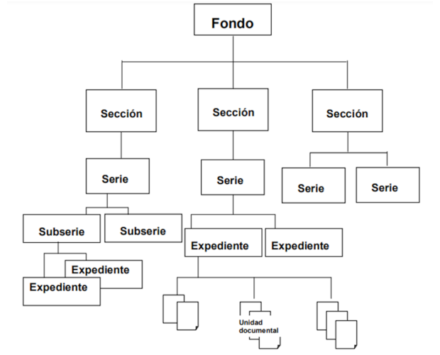

Key: AC20240531B
Resumen: En este acuerdo el Consejo de la Judicatura del Estado (en adelante “el Consejo”) considera oportuno aprobar el Proyecto de Valoración Documental del Poder Judicial del Estado de Coahuila de Zaragoza (en adelante “PVD del PJECZ”). Además, el Consejo instruye a las autoridades competentes para la implementación del PVD del PJECZ y para el cumplimiento del presente acuerdo.
Saltillo, Coahuila de Zaragoza. Acuerdo correspondiente a la sesión del 29 de mayo de 2024.
I. CONSIDERACIONES
1. Antecedentes
El Consejo pone de manifiesto que el 26 de abril de 2024, se llevó a cabo la sesión ordinaria de la Comisión Interdisciplinaria de Archivos del Poder Judicial del Estado de Coahuila de Zaragoza (en adelante “la CIA”).
El Consejo refiere que en esta sesión, la CIA en uso de las facultades legales que le conceden las Reglas de Operación de la CIA, analizó el Proyecto de Valoración Documental en el Poder Judicial del Estado de Coahuila de Zaragoza . El Consejo constata que en esta sesión de la CIA se decidió enviar el PVD del PJECZ al Consejo de la Judicatura para su análisis y eventual aprobación.
Este proyecto tiene como objetivos obtener la certificación de la norma ISO 30301 y contar con las herramientas adecuadas para llevar a cabo la valoración documental para verificar plazos de conservación y definir el destino final de las series documentales que se producen en el Poder Judicial del Estado de Coahuila de Zaragoza.
Es por ello que se somete a consideración del Consejo de la Judicatura para iniciar con la orientación, capacitación y elaboración de las fichas de valoración documental a las personas servidoras públicas que intervendrán en la aplicación del PVD del PJECZ.
En ese sentido, el Consejo se pronuncia al respecto en el presente acuerdo.
2. Facultades del Consejo de la Judicatura
El Consejo de la Judicatura del Estado de Coahuila de Zaragoza, es el órgano del Poder Judicial del Estado de Coahuila de Zaragoza, que tiene como funciones la administración, vigilancia y disciplina de los órganos jurisdiccionales, según lo establece el artículo 143 de la Constitución Política del Estado de Coahuila de Zaragoza.
De acuerdo con el artículo 57, fracciones VIII, IX y XI, de la Ley Orgánica del Poder Judicial del Estado de Coahuila de Zaragoza (en adelante “LOPJECZ”), tiene las siguientes facultades: supervisar el funcionamiento de los órganos que integran el Poder Judicial, así como el desempeño de sus servidores públicos; y dictar las providencias necesarias para el mejoramiento de la administración de justicia; fijar los criterios generales de evaluación mensual de juicios iniciados, en trámite y concluidos en el Poder Judicial, basados, por los menos, en el rendimiento, eficiencia y eficacia. Para esto último, en su caso, previa ponderación de las evaluaciones respectivas, tomar las providencias que estimen necesarias con excepción del Pleno del Tribunal y expedir los reglamentos y acuerdos generales que sean necesarios para regular el funcionamiento del Poder Judicial y de sus órganos.
Ahora bien, el Consejo de la Judicatura, es un órgano de administración encargado de emitir las providencias necesarias para el adecuado funcionamiento de los órganos que integran el Poder Judicial del Estado de Coahuila de Zaragoza, todo ello encaminado a contribuir con el mejoramiento de la administración de justicia.
El Archivo Judicial General (en adelante “AJG”) es un órgano administrativo del Poder Judicial del Estado de Coahuila de Zaragoza encargado de la recepción, deposito, resguardo, conservación, orden y clasificación de expedientes y documentos generados por los órganos judiciales y dependencias administrativas del Poder Judicial, así como a proporcionar servicios de consulta a los abogados y público en general que lo requiera .
El Consejo en la sesión celebrada el 15 de julio de 2021, emitió el acuerdo C-96/2021, mediante el cual aprueba la creación de la Comisión Interdisciplinaria de Archivos del Poder Judicial del Estado de Coahuila de Zaragoza y sus Reglas de Operación.
La Comisión Interdisciplinaria de Archivos del Poder Judicial del Estado de Coahuila de Zaragoza, tiene por objeto asegurar la debida conservación y destino final de los archivos físicos y electrónicos del Poder Judicial del Estado, mediante el establecimiento de políticas, criterios, principios, bases generales para la organización, conservación, administración, preservación y valoración de los archivos físicos y electrónicos del Poder Judicial del Estado; y con ello, asegurar el cumplimiento de la normatividad y el manejo adecuado del Archivo General del Poder Judicial del Estado de Coahuila de Zaragoza .
Son atribuciones de la CIA, de acuerdo a lo establecido en el artículo 5, fracciones V y VI, de sus Reglas de Operación, analizar y proponer mejoras en los procesos y procedimientos institucionales que dan origen a la documentación que integran los expedientes de cada serie documental en el Poder Judicial y proponer que la información establecida en las fichas técnicas de valoración documental esté alineada a la operación funcional y a los objetivos estratégicos del Poder Judicial.
En esta ocasión el Consejo estima conveniente aprobar el proyecto de valoración documental del Poder Judicial del Estado de Coahuila de Zaragoza, que tiene como objetivo de estipular los criterios de valoración documental para decidir el destino final de las series documentales que se producen en el Poder Judicial del Estado de Coahuila de Zaragoza.
Por ende, su aprobación resulta competencia del Consejo, al constituir una herramienta que trasciende en materia de gestión y control documental, pues con este proyecto se fijan las bases para el tratamiento apropiado de los archivos generados, producidos, obtenidos, adquiridos, transformados o en posesión de cada una de las áreas del Poder Judicial del Estado de Coahuila de Zaragoza, lo que impacta directamente en la administración de justicia y el manejo de documentos generados en este poder público.
2. Justificación para la emisión del presente acuerdo
El artículo 17 de la Constitución Política de los Estados Unidos Mexicanos establece que toda persona tiene derecho a que se le administre justicia por tribunales que estarán expeditos para impartirla en los plazos y términos que fijen las leyes, emitiendo sus resoluciones de manera pronta, completa e imparcial. Su servicio será gratuito, quedando en consecuencia, prohibidas las costas judiciales.
El artículo 6, apartado A de la Constitución General prevé que el derecho a la información deberá ser garantizado por el Estado y que toda persona tiene derecho al libre acceso a información plural y oportuna, así como a buscar, recibir y difundir información e ideas de toda índole por cualquier medio de expresión.
El artículo constitucional en cita, preceptúa que en materia de acceso a la información operará el principio de máxima publicidad, pues toda la información que se encuentre en posesión de cualquier autoridad, entidad, órgano y organismo de los Poderes Ejecutivo, Legislativo y Judicial, órganos autónomos, partidos políticos, fideicomisos y fondos públicos, así como de cualquier persona física, moral o sindicato que reciba y ejerza recursos públicos o realice actos de autoridad en el ámbito federal, estatal y municipal, es pública y sólo podrá ser reservada temporalmente por razones de interés público y seguridad nacional, en los términos que fijen las leyes.
El artículo 7, décimo segundo párrafo, fracción II, de la Constitución Política del Estado del Estado de Coahuila de Zaragoza, estipula que toda persona tiene derecho a la información pública. La garantía de acceso a la información pública, es un derecho fundamental.
Asimismo, el artículo 8 de la Constitución Local, prevé que la ley establecerá las formas, términos y procedimientos de los instrumentos de participación ciudadana y comunitaria, para garantizar el derecho a participar en la vida pública del estado y de los municipios. El acceso a la información pública garantiza el derecho a la participación de las personas.
Por su parte, la Ley de Acceso a la Información Pública para el Estado de Coahuila de Zaragoza, estipula que para cumplir con su objetivo, proveerá lo necesario para la debida gestión, administración, conservación y preservación de los archivos administrativos y la documentación en poder de los sujetos obligados para garantizar el acceso a la información pública .
El artículo 75 de la Ley en comento estipula que los sujetos obligados deberán preservar documentos y expedientes en archivos administrativos organizados y actualizados, de conformidad con las demás disposiciones aplicables, asegurando su adecuado funcionamiento. Debiendo expedir lineamientos de gestión documental y archivo a su interior, que permita el acceso sencillo a la información, de conformidad con las disposiciones en la materia.
Además, en el manejo de los documentos, los sujetos obligados deberán observar los principios de disponibilidad, eficiencia, localización, integridad y conservación .
Ahora bien, el artículo 78, fracción II, de la Ley de Acceso a la Información Pública para el Estado de Coahuila de Zaragoza dispone que el Poder Judicial del Estado es competente para regular en materia de archivos y que contará con un área como responsable de la organización y regulación de su archivo administrativo.
Es por ello que el Poder Judicial del Estado, tiene la obligación de establecer políticas, criterios, principios y bases generales para la organización, conservación, administración y preservación homogénea de los archivos.
La Ley General de Archivos (en adelante “LGA”), en su artículo 7 prevé que los sujetos obligados deberán producir, registrar, organizar y conservar los documentos de archivo sobre todo acto que derive del ejercicio de sus facultades, competencias o funciones de acuerdo con lo establecido en las disposiciones jurídicas correspondientes.
Asimismo, la LGA estipula en su artículo 11, fracción XI, que los sujetos obligados deberán aplicar métodos y medidas para la organización, protección y conservación de los documentos de archivo, considerando el estado que guardan y el espacio para su almacenamiento; así como procurar el resguardo digital de dichos documentos, de conformidad con dicha ley y las demás disposiciones jurídicas aplicables.
En este contexto, el artículo 13 de la LGA refiere que los sujetos obligados deberán contar con instrumentos de control y de consulta archivísticos conforme a sus atribuciones y funciones, manteniéndolos actualizados y disponibles; y contarán al menos con los siguientes:
I. Cuadro general de clasificación archivística ;
II. Catálogo de disposición documental ; y
III. Inventarios documentales.
El precepto normativo en cita, dispone que la estructura del cuadro general de clasificación archivística atenderá los niveles de fondo, sección y serie, sin que esto excluya la posibilidad de que existan niveles intermedios, los cuales serán identificados de manera alfa numérica.
El Consejo constata que el Archivo General actualmente se encuentra en proceso de certificación de la norma ISO 30301. Esta norma ISO 30301 es un estándar internacional que establece los requisitos y directrices para la gestión de documentos en las organizaciones. Tiene como objetivo principal asegurar que los documentos se gestionen de manera eficiente, garantizando su disponibilidad, integridad y confidencialidad a lo largo de su ciclo de vida .
La norma ISO 30301 es una herramienta fundamental para quienes desean mejorar su gestión documental y garantizar la disponibilidad y confidencialidad de la información.
De esta manera, esta certificación brindará amplios beneficios en materia de gestión y manejo documental de las series que se generan en este poder público. Uno de los principales beneficios de la implementación de la norma ISO 30301 es la optimización de procesos de gestión documental, contribuyendo a una mayor eficiencia operativa. Por otro lado, también se reducen riesgos, pues, al establecer un sistema de gestión documental robusto, se minimiza el riesgo de pérdida, mal uso o acceso no autorizado a la información. Asimismo, permite contar con información confiable y actualizada facilitando la toma de decisiones informadas y basadas en datos reales.
El Consejo pone de manifiesto que una de las políticas públicas implementadas en este poder público recientemente consiste en la renovación y mejoramiento del Archivo General del Poder Judicial del Estado de Coahuila de Zaragoza. Prueba de ello es la implementación del Sistema de Gestión Digital de Documentos de Archivo (SIGDDA) y el programa de levantamiento de inventario del Archivo Judicial General .
Estas herramientas contribuyen en el mejoramiento de la gestión documental, así como permiten modernizar los procesos operativos del Archivo Judicial General. Incluso, con tales herramientas se puede acceder a inventarios confiables, con lo que se logra un mayor y eficiente acceso a la información que se maneja en los distintos órganos de este poder público.
Por ello, en el contexto de la certificación de la norma ISO 30301 y en cumplimiento a lo dispuesto en el artículo 13 de la LGA, es importante llevar a cabo la valoración documental que permita definir plazos de conservación y el destino final de las series documentales generales, para con ello, posteriormente autorizar y formalizar por este Consejo, el cuadro actual de clasificación documental y el catálogo de disposición documental que refieren la fracción I y II del citado artículo.
En ese sentido, para que lo anterior sea posible, es esencial la aprobación del PVD del PJECZ. El cual se integrará de una metodología que permite llevar a cabo el análisis y valoración de la información de cada órgano jurisdiccional, no jurisdiccional y administrativo del Poder Judicial del Estado de Coahuila de Zaragoza, para poder simplificar la información generada y con ello establecer criterios de tiempos de conservación de la documentación.
El Archivo General y la CIA, con la colaboración de la Visitaduría Judicial General serán las autoridades que clasifiquen y establezcan los tiempos de conservación de documentos, con lo que se permitirá delimitar criterios de eliminación de archivos a través del proceso de baja documental.
En conclusión, es importante que el Consejo en este acuerdo apruebe el PVD del PJECZ, lo que permitirá avanzar en la mejora de la gestión documental y que permitirá al Archivo General obtener la certificación de la norma ISO 300301. Asimismo, con ello se podrá actualizar y formalizar el cuadro general de clasificación archivística y el catálogo de disposición documental.
3. PVD del PJECZ
La LGA, en el artículo 4, fracción LIX, define a la valoración documental como la actividad que consiste en el análisis e identificación de los valores documentales, es decir, el estudio de la condición de los documentos que les confiere características específicas en los archivos de trámite o concentración o evidenciales, testimoniales e informativos para los documentos históricos, con la finalidad de establecer criterios, vigencias documentales y, en su caso, plazos de conservación, así como para disposición documental.
Por otro lado, la fracción XXXI, del artículo en cita, precisa que la ficha técnica de valoración documental es el instrumento que permite identificar, analizar y establecer el contexto y valoración de la serie documental.
Ahora bien, el Proyecto de Valoración Documental del Poder Judicial del Estado de Coahuila de Zaragoza, tiene como principal objetivo realizar una valoración documental en los órganos jurisdiccionales, no jurisdiccionales y administrativos para conocer: procesos, procedimientos, registros y series que se integran en el ejercicio de funciones y atribuciones en cada área, con el propósito de verificar plazos de conservación y destino final de documentos.
La valoración documental en los órganos que integran el Poder Judicial del Estado, se podrá visualizar a través de la elaboración de la Ficha Técnica de Valoración Documental (en adelante “FTVD”). Con la elaboración de la FTVD, se permitirá conocer las series documentales que se generan en el Poder Judicial del Estado de Coahuila de Zaragoza y posteriormente clasificar y valorar dichas series para con ello poder decidir su destino final. A través de esto, se podrá obtener una actualización y formalización del cuadro de clasificación archivística y el catálogo de disposición documental en el que se establecerán los valores, vigencia documental, plazos de conservación y el destino final de las series documentales.
Pues, una vez elaboradas estas FTVD, las autoridades intervinientes como el Archivo General, la CIA y la Visitaduría Judicial General, procederán a realizar el análisis y valoración de las series que se procuren.
Estas herramientas permitirán conocer la totalidad de documentos que se generan en los órganos jurisdiccionales, no jurisdiccionales y administrativos del Poder Judicial del Estado y distinguirlos entre aquellos que se producen con motivo del cumplimiento de una obligación o aquellos que se producen porque de forma común todas las áreas productoras.
Además, que con la implementación de este PVD del PJECZ se persiguen objetivos específicos, entre los que están la certificación de la norma ISO30301, así como la de establecer términos de transferencia documentales y delimitar criterios de eliminación de archivos a través del proceso de baja documental.
Es importante que en una primera etapa el PVD del PJECZ se implemente en los órganos jurisdiccionales, no jurisdiccionales y administrativos del Distrito Judicial de Saltillo que contengan un archivo de trámite, es decir, aquel integrado por documentos de archivo de uso cotidiano y necesario para el ejercicio de las atribuciones y funciones de los sujetos obligados. Lo anterior, tomando en consideración que el distrito judicial en comento es uno de los que cuenta con un mayor número de juzgados y el cual es la sede de diversos órganos no jurisdiccionales y administrativos de este poder público. De esta manera, una vez que se concluya la implementación en este distrito judicial y se cumplan con los objetivos planteados, será posible su integración en los demás distritos judiciales.
4. Metodología
El PVD del PJECZ, como ya se adelantó, está compuesto de una metodología que permitirá a las autoridades intervinientes lograr los objetivos planteados Esta metodología inicia con reuniones informativas y de capacitación y concluye con la propuesta de formalización y actualización del cuadro general de clasificación archivística y el catálogo de disposición documental. Las actividades de esta metodología se muestran en el siguiente calendario:
| Actividad | Fecha | Órgano jurisdiccional, no jurisdiccional y administrativo |
|---|---|---|
| Capacitación virtual. | 17 de junio de 2024. | Órganos jurisdiccionales, no jurisdiccionales y administrativos del Distrito Judicial de Saltillo. |
| Recopilación de información en las áreas productoras de documentos. | 24 de junio de 2024. | Juzgado Cuarto de Primera Instancia en Materia Civil del Distrito Judicial de Saltillo. Juzgado Tercero de Primera Instancia en Materia Civil del Distrito Judicial de Saltillo. |
| 25 de junio de 2024. | Juzgado Primero de Primera Instancia en Materia Familiar del Distrito Judicial de Saltillo. Juzgado Segundo de Primera Instancia en Materia Familiar del Distrito Judicial de Saltillo. | |
| 26 de junio de 2024. | Juzgado Cuarto de Primera Instancia en Materia Familiar del Distrito Judicial de Saltillo. Juzgado Quinto de Primera Instancia en Materia Familiar del Distrito Judicial de Saltillo. | |
| 1 de julio de 2024. | Juzgado Primero de Primera Instancia en Materia Civil del Distrito Judicial de Saltillo. Juzgado Segundo de Primera Instancia en Materia Civil del Distrito Judicial de Saltillo. | |
| 2 de julio de 2024. | Juzgado de Primera Instancia en Materia Civil Auxiliar con Especialización Ambiental en el Estado de Coahuila de Zaragoza Tribunal Laboral del Distrito Judicial de Saltillo. Juzgado Quinto de Primera Instancia en Materia Civil con especialización Hipotecaria del Distrito Judicial de Saltillo. | |
| 3 de julio de 2024. | Juzgado Primero de Primera Instancia en Materia Mercantil del Distrito Judicial Saltillo Juzgado Segundo de Primera Instancia en Materia Mercantil del Distrito Judicial de Saltillo. | |
| 4 de julio de 2024. | Juzgado Primero Letrado en Materia Civil del Distrito Judicial de Saltillo. Juzgado Segundo Letrado en Materia Civil del Distrito Judicial de Saltillo. | |
| 12 de agosto de 2024. | Primer Tribunal Distrital del Estado de Coahuila de Zaragoza. Tribunal de Conciliación y Arbitraje del Poder Judicial del Estado de Coahuila de Zaragoza. | |
| 13 de agosto de 2024. | Sala Colegiada Civil y Familiar del Tribunal Superior de Justicia del Estado de Coahuila de Zaragoza. Sala Colegiada Penal del Tribunal Superior de Justicia del Estado de Coahuila de Zaragoza. | |
| 14 de agosto de 2024. | Juzgado Primero de Primera Instancia en Materia Penal del Distrito Judicial de Saltillo. Juzgado de Primera Instancia en Materia Penal del Sistema Acusatorio Oral del Distrito Judicial de Saltillo. | |
| 15 de agosto de 2024. | Presidencia del Tribunal Superior de Justicia del Estado de Coahuila de Zaragoza. Secretaría del Pleno del Tribunal Superior de Justicia del Estado de Coahuila de Zaragoza. | |
| 26 de agosto de 2024. | Dirección del Centro de Evaluación Psicosocial del Poder Judicial del Estado de Coahuila de Zaragoza. Dirección del Instituto Estatal de Defensoría Pública de Coahuila de Zaragoza. Dirección Centro de Medios Alternos y Solución de Controversias del Poder Judicial del Estado de Coahuila de Zaragoza. | |
| 27 de agosto de 2024. | Instituto de Especialización Judicial del Poder Judicial del Estado de Coahuila de Zaragoza. Secretaría Técnica y de Transparencia de la Presidencia del Tribunal Superior de Justicia del Estado de Coahuila de Zaragoza. | |
| 28 de agosto de 2024. | Oficialía Mayor del Poder Judicial del Estado de Coahuila de Zaragoza. Unidad Jurídica de la Oficialía Mayor del Poder Judicial del Estado de Coahuila de Zaragoza. | |
| 2 de septiembre de 2024. | Recursos Financieros de la Oficialía Mayor del Poder Judicial del Estado de Coahuila de Zaragoza. Recursos Humanos de la Oficialía Mayor del Poder Judicial del Estado de Coahuila de Zaragoza | |
| 3 de septiembre de 2024. | Dirección de Infraestructura de la Oficialía Mayor del Poder Judicial del Estado de Coahuila de Zaragoza. Recursos Materiales de la Oficialía Mayor del Poder Judicial del Estado de Coahuila de Zaragoza. | |
| 4 de septiembre de 2024. | Dirección de Informática de la Oficialía Mayor del Poder Judicial del Estado de Coahuila de Zaragoza. Dirección de Innovación de la Oficialía Mayor del Poder Judicial del Estado de Coahuila de Zaragoza. | |
| 5 de septiembre de 2024. | Auditoría Interna del Poder Judicial del Estado de Coahuila de Zaragoza. Visitaduría General del Poder Judicial del Estado de Coahuila de Zaragoza. | |
| Reunión con áreas gestoras de la documentación de comprobación inmediata. | 13 de septiembre de 2024. | |
| Entrega de Fichas Técnicas de Valoración Documental al Archivo General. | 20 de septiembre de 2024. | |
| Sesión Ordinaria de la Comisión Interdisciplinaria de Archivos. | 4 de octubre de 2024. | |
| Presentación de propuesta de Cuadro General de Clasificación Archivística y Cuadro de Disposición Documental. | Noviembre-diciembre de 2024. |
Este calendario permite dividir las actividades para la implementación del PVD del PJECZ. En este calendario se prevé que las actividades inicien con una reunión virtual en la que se comentarán los aspectos generales de la valoración documental y la elaboración de la FTVD. La reunión virtual se efectuará ante todos los titulares de los órganos jurisdiccionales, no jurisdiccionales y administrativos del distrito judicial de Saltillo, la persona que funge como EGDTE y demás personal que se estime oportuno.
En este calendario también se prevé la fecha de entrega de la FTVD y se plantea una fecha aproximada para la entrega de la propuesta del Cuadro General de Clasificación Archivística y Cuadro de Disposición Documental.
4.1. Reuniones informativas y de capacitación
Como puede apreciarse del calendario inserto en el apartado identificado con el 4. se prevé que la implementación del proyecto inicie con una capacitación virtual y posterior a ello, la Directora del Archivo General se entrevistará con la persona titular del área, la persona que funge como EGDTE, y demás personal necesario del área.
El Consejo constata que, en días previos ya se han llevado a cabo reuniones de capacitación y de información con el titular y personal del Juzgado Tercero de Primera Instancia en Materia Familiar del Distrito Judicial de Saltillo y el titular y personal del Juzgado Tercero de Primera Instancia en Materia Mercantil del Distrito Judicial de Saltillo, así como con personal de la Secretaría de Acuerdo y Trámite del Consejo de la Judicatura. Ello, tomando en consideración que los titulares de dichos órganos forman parte de la Comisión Interdisciplinaria de Archivos, motivo de preparación para proceder a la capacitación y orientación de las otras áreas.
En estas reuniones se capacitará al personal de referencia, con la finalidad de que puedan identificar las funciones y atribuciones que realicen en cumplimiento de sus obligaciones normativas, así como los procesos y procedimientos que generan en cumplimiento a sus funciones. En estas reuniones se procederá a la identificación de series documentales y se clasificarán mediante la FTVD, según las funciones sustantivas y comunes.
4.2 Elaboración de la FTVD
La valoración documental de las series se realizará una vez que se haya recabado la clasificación de todas las áreas para hacer un análisis y evitar duplicidad de información. Para que esto sea posible, cada área generadora del Distrito Judicial de Saltillo, llenará una FTVD de todas y cada una de las series documentales que se generen en cumplimiento a sus obligaciones y funciones normativas. Estas FTVD se elaborarán por el titular del órgano jurisdiccional, no jurisdiccional o administrativo, en estrecha colaboración con la persona que funge como EGDTE.
Para ello, el Archivo General en coordinación con la CIA, atenderán las cuestiones que surjan con motivo del llenado de la ficha de valoración documental y la clasificación de documentos. Además, el Archivo General realizará en todo momento la labor de orientación y capacitación al personal de los órganos jurisdiccionales, no jurisdiccionales y administrativos involucrados en la elaboración de la FTVD.
Los órganos jurisdiccionales, no jurisdiccionales y administrativos tendrán como plazo máximo el 20 de septiembre del año en curso, para presentar las fichas de valoración documental.
El formato de la FTVD, con los datos requeridos para el llenado es el siguiente:
Cada uno de los datos señalados en los recuadros de estos formatos, se explicarán y expondrán en las visitas que se realicen por parte del Archivo General. Además, la descripción de estos conceptos se encuentra detallada en el PVD del PJECZ que forma parte del presente acuerdo, en el apartado de Criterios de Valoración Documental.
Asimismo, quienes deseen recibir una asesoría subsecuente, en todo momento, podrán tener un acercamiento a la Dirección del Archivo General, a través de su titular. Para ello, será posible que soliciten una reunión virtual, a través del correo electrónico mixely.martinez@pjecz.gob.mx.
4.3. Análisis y valoración
De esta forma, una vez que se envíen por todas las áreas las FTVD de cada serie, el Archivo General, en conjunto con la CIA y la Visitaduría Judicial General efectuará el análisis y valoración de la información proporcionada por cada una de las áreas. Ello, como se establece en el PVD del PJECZ, con la finalidad de simplificar la información requerida, para continuar con la clasificación de los documentos.
4.4. Clasificación y establecimiento de tiempos de conservación
Las autoridades que llevarán a cabo esta tarea serán:
a) Archivo General.
b) CIA.
c) Visitaduría Judicial General.
d) Áreas encargadas de la gestión de los documentos de comprobación inmediata, es decir personal de los órganos no jurisdiccionales y administrativos encargados del resguardo documental.
Al Archivo General por su parte le corresponde la realización de las visitas y la recaudación de los datos necesarios para proceder a sintetizar la información.
De esta manera, una vez que se concluya la tarea del Archivo General, la Comisión y la Visitaduría, procederán a la revisión y análisis de la información recabada, lo que permitirá que en conjunto analicen el tiempo de conservación de las series documentales.
Por su parte, el personal identificado con el inciso d) en este apartado, procederán a identificar y verificar la trascendencia de los documentos de comprobación inmediata que se generan y con ello, se decidirán los tiempos de conservación de estas series.
4.5. Actualización del Cuadro de Clasificación Archivística y el Catálogo de Disposición Documental
De esta manera, una vez que se efectúen los pasos anteriores de esta metodología, corresponderá al Archivo General, a la CIA y a la Visitaduría Judicial General, presentar una propuesta de actualización del cuadro de clasificación archivística y al catálogo de disposición documental. Esta propuesta de actualización de tales registros será presentada al Consejo para su revisión y formalización.
En ese sentido, a través de la metodología planteada y con la colaboración de las autoridades referidas en el presente acuerdo, será posible la materialización de este PVD del PJECZ.
El Consejo reitera que es elemental para este poder público continuar avanzando en materia de gestión documental, para seguir atendiendo lo establecido en los estándares nacionales e internacionales solicitados en materia archivística, para con ello estar en posibilidad de seguir cumpliendo con las obligaciones normativas aplicables, con el objetivo obtener procesos operativos idóneos y óptimos.
El Consejo refrenda el compromiso del Poder Judicial en la elaboración, validación e implementación de los instrumentos técnicos de control y consulta archivísticos, que contribuyan con la adecuada y oportuna organización, conservación y localización de los documentos y expedientes, de conformidad con la naturaleza del archivo y las necesidades del servicio.
5. Valoración documental en el Archivo General
En el PVD del PJECZ, también es importante la valoración documental dentro del Archivo General. El objetivo de ello, es revisar, identificar, clasificar y ordenar todos los legajos que se encuentran en dicho órgano no jurisdiccional, con el propósito de definir su destino final.
La metodología para esta valoración documental se encuentra descrita en el PVD del PJECZ en el apartado de valoración documental en el Archivo General.
Lo anterior, permitirá al personal del Archivo General, un mejor control y una mejor gestión del resguardo documental a su cargo.
II. DECISIONES
Por lo anteriormente expuesto, quienes integran el Pleno del Consejo de la Judicatura deciden:
Primero. Se aprueba el Proyecto de Valoración Documental del Poder Judicial del Estado de Coahuila de Zaragoza, en los términos establecidos en la parte considerativa del presente acuerdo.
El Archivo General será la autoridad encargada de implementar este proyecto y de realizar la labor de orientación y difusión entre los órganos intervinientes, así como llevar a cabo coordinación y las gestiones necesarias para la adecuada implementación.
Segundo. El Proyecto de Valoración Documental del Poder Judicial del Estado de Coahuila de Zaragoza y el formato de la Ficha Técnica de Valoración Documental, forman parte del presente acuerdo y del acta que se emite en esta sesión, como anexo.
Tercero. Las cuestiones que surjan con la aplicación de este acuerdo y sobre el llenado de la FTVD, así como lo no previsto, será dilucidado por el Consejo de la Judicatura, ya sea por medio del Pleno o su Presidente en su caso, y por el Archivo General y la Comisión Interdisciplinaria de Archivos del Poder Judicial del Estado en su ámbito competencial.
Cuarto. Una vez concluida la implementación del Proyecto de Valoración Documental del Poder Judicial del Estado de Coahuila de Zaragoza en el Distrito Judicial de Saltillo, el Archivo General, en conjunto con la CIA y la Visitaduría Judicial General, analizarán la posibilidad de su implementación en los demás distritos judiciales de este Poder Judicial, en los términos planteados en el presente acuerdo.
Quinto. Se instruye a los titulares de los órganos jurisdiccionales, no jurisdiccionales y administrativos del Poder Judicial del Estado de Coahuila de Zaragoza del Distrito Judicial de Saltillo, a la Comisión Interdisciplinaria de Archivos del Poder Judicial del Estado de Coahuila de Zaragoza, a la Dirección del Archivo General y a la Secretaría Técnica para que realicen las gestiones pertinentes para llevar a cabo el cumplimiento al presente acuerdo.
Sexto. Se instruye a la Secretaría de Acuerdo y Trámite para que comunique el presente acuerdo a los titulares de los órganos jurisdiccionales, no jurisdiccionales y administrativos del Poder Judicial del Estado de Coahuila de Zaragoza, al Archivo General, a la Secretaría Técnica y a la Visitaduría Judicial General.
Séptimo. Se instruye a la Secretaría de Acuerdo y Trámite del Consejo de la Judicatura del Estado de Coahuila de Zaragoza para que realice las gestiones necesarias para la publicación del presente acuerdo en el sitio web oficial del Poder Judicial del Estado de Coahuila de Zaragoza.
Anexo 1
Acuerdo C-077/2024
Proyecto de Valoración Documental en el Poder Judicial del Estado de Coahuila de Zaragoza
El Poder Judicial del Estado Coahuila de Zaragoza ha implementado acciones y estrategias para impulsar una adecuada organización, conservación, administración y preservación de los archivos con el objetivo de hacer frente al nuevo reto que implica operar un Sistema Institucional de Archivos que garantice la transparencia, calidad, eficiencia, innovación y profesionalidad para brindar certeza jurídica, confianza e imparcialidad a la ciudadanía.
La Ley General de Archivos en su artículo 4. fracción LIX menciona que la valoración documental consiste en el estudio de la condición de los documentos que les confiere características específicas en los archivos de trámite o concentración con la finalidad de establecer criterios, vigencias documentales y, en su caso, plazos de conservación, así como el destino final.
En ese sentido, el proyecto de valoración documental fija las bases y criterios generales para el tratamiento apropiado de los archivos generados, producidos, obtenidos, adquiridos, transformados o en posesión de cada una de las áreas que conforman el Poder Judicial del Estado de Coahuila de Zaragoza; toda vez que, se implementa una metodología que nos permitirá reconocer los procesos, procedimientos, registros y series que se integran en el ejercicio de las funciones y atribuciones de cada área que conforma este poder público con el propósito de verificar los plazos de conservación y destino final de los documentos de archivo.
Este proceso archivístico nos permite identificar y asignar los valores primarios y valores secundarios, a fin de establecer con base en éstos, los tiempos de vigencia o resguardo de la documentación del Poder Judicial del Estado de Coahuila de Zaragoza. Así mismo, determina el destino final de los documentos agrupados en series, ya sea para dar de baja y eliminar aquella documentación que al término de sus vigencias no alcance un valor secundario, o bien, que amerite su conservación como documentación histórica.
Cabe destacar que el desarrollo del proyecto implica tiempo de análisis, reflexión, clasificación, sesiones y reuniones extensas con las unidades responsables de generar documentos dentro del Poder Judicial del Estado de Coahuila de Zaragoza. Lo anterior, con la debida coordinación y participación de la Comisión Interdisciplinaria de Archivos, quien en cumplimiento a sus atribuciones establecidas en los numerales 50 y 52 de la Ley General de Archivos, colaborará en el establecimiento de los valores documentales, vigencias, plazos de conservación y disposición documental durante el proceso de elaboración de las fichas técnicas de valoración de la serie documental.
Marco legal
Art. 13. Ley General de Archivos.
Los sujetos obligados tienen la obligación de contar con los instrumentos de control y de consulta archivísticos conforme a sus atribuciones y funciones, manteniéndoos actualizados y disponibles, los cuales son:
- Cuadro general de clasificación archivística.
- Catálogo de disposición documental.
- Inventarios documentales.
Artículo 5. De las Reglas de operación de la Comisión Interdisciplinaria de Archivos:
Son atribuciones de la Comisión Interdisciplinaria las siguientes:
Establecer al interior del Poder Judicial la política interna, lineamientos, criterios y recomendaciones en materia de valoración documental, gestión documental, organización y conservación de archivos.
Vigilar el cumplimiento de los lineamientos para actualizar, valorar y decidir la disposición documental de las series documentales producidas por las unidades responsables que integran el Poder Judicial del Estado, emitidos tanto por el Consejo Nacional de Archivos como por el Consejo Local de Archivos del Estado de Coahuila de Zaragoza.
Formular opiniones, referencias técnicas sobre valores documentales, pautas de comportamiento y recomendaciones sobre la disposición documental de las series documentales que integran el acervo del Poder Judicial.
Considerar en la formulación de referencias técnicas para la determinación de valores documentales, vigencias, plazos de conservación y disposición documental de las series, la planeación estratégica y normatividad, así como los criterios de: procedencia, orden original, diplomático, contexto, contenido y utilización.
Analizar y proponer mejoras en los procesos y procedimientos institucionales que dan origen a la documentación que integran los expedientes de cada serie documental en el Poder Judicial.
Proponer que la información establecida en las fichas técnicas de valoración documental esté alineada a la operación funcional y a los objetivos estratégicos del Poder Judicial.
Objetivo General
Llevar a cabo una valoración documental en las áreas responsables de la generación de documentos para conocer los procesos, procedimientos, registros y series que se integran en el ejercicio de las funciones y atribuciones de cada área que conforma el Poder Judicial del Estado de Coahuila de Zaragoza, con el propósito de verificar los plazos de conservación y destino final de los documentos de archivo.
Objetivos Específicos
- Identificar los archivos de trámite que conforman el sistema institucional de archivos.
- Conocer la gestión documental referente a la creación, captura, clasificación, almacenamiento, migración, disposición y acceso de las series documentales.
- Establecer términos de transferencias documentales.
- Delimitar criterios de eliminación de archivos a través del proceso de baja documental.
Metodología
La metodología consta de una serie de pasos que se llevarán a cabo en el año en curso. El Archivo General en coordinación con la Comisión Interdisciplinaria de Archivos del PJECZ serán quienes implementen el proyecto de valoración documental.
Se trabajará con las áreas del distrito judicial de Saltillo que desempeñan funciones sustantivas que son aquellas atribuciones por las que fue creada la Institución, es decir, sus competencias o funciones principales que le dan origen y las distinguen de otras Instituciones.
Así mismo, las áreas con funciones comunes son aquellas atribuciones generales que aplican a todos los sujetos obligados. Por tal motivo, se respetará la clasificación propuesta en el Instructivo de elaboración del Cuadro general de clasificación archivística que consta de lo siguiente:
- 1C Legislación
- 2C Asuntos Jurídicos
- 3C Programación Organización y Presupuestación
- 4C Recursos Humanos
- 5C Recursos Financieros
- 6C Recursos Materiales y obra pública
- 7C Servicios Generales
- 8C Tecnologías y Servicios de la Información
- 9C Comunicación Social
- 10C Control de Auditoría de Actividades Públicas
- 11C Programación, Información, Evaluación y Políticas
- 12C Transparencia y Acceso a la Información
1. Ahora bien, como primer paso, se llevará a cabo una capacitación virtual por el Archivo General para las y los titulares, enlaces de GDTE y demás personal necesario de las áreas jurisdiccionales, no jurisdiccionales y administrativas del distrito de Saltillo, con el propósito de presentar el proceso de implementación de clasificación y valoración documental.
2. Posteriormente, el Archivo General visitará las diferentes áreas del Poder Judicial del Estado del distrito judicial de Saltillo en el mes de junio- septiembre del presente año para entrevistarse con las personas titulares de cada área, el Enlace de Gestión Documental Transparencia y Estadística y demás personal necesario en donde se deberán identificar las funciones y atribuciones que desempeñan, según diversas disposiciones que regulan su área.
Se identificarán y clasificarán los documentos que se producen en el área según su utilidad, por mencionar, documentos de archivo, comprobación inmediata o apoyo informativo. Posteriormente, se aplicará una Ficha Técnica de Valoración Documental FTVD (que se describe enseguida) a cada serie sustantiva y común que resulte de los documentos de archivo, para fundar y motivar su creación conforme al marco jurídico y normativo del sujeto obligado.
En el caso de los órganos jurisdiccionales de primera instancia se tomará como referencia las Fichas Técnicas de Valoración Documental que se hayan elaborado por alguna área de la misma materia.
Cualquier área al que le resulte necesario recibir asesoría subsecuente a la primera visita, podrán solicitar una reunión virtual mediante correo electrónico a la cuenta mixely.martinez@pjecz.gob.mx y el Archivo General en coordinación con la Comisión Interdisciplinaria de Archivos, asesorarán en la resolución de las dudas.
3. El Archivo General, en conjunto con la Comisión Interdisciplinaria de Archivos, la Visitaduría General, las áreas encargadas de la gestión de la documentación de comprobación inmediata y demás personal que pueda fungir como persona asesora, serán quienes establezcan los tiempos de conservación de la documentación.
4. Las Fichas Técnicas de Valoración Documental de cada serie se entregarán al Archivo General físicamente y se enviarán al correo anteriormente mencionado.
5. Presentación de las Fichas Técnicas de Valoración Documental y listado de documentos de comprobación inmediata ante la Comisión Interdisciplinaria de Archivos con el objetivo de analizar y valorar la información proporcionada por cada área para lograr la simplificación de la información requerida. De ser necesario se podrán llevar a cabo reuniones de trabajo para verificarla información de las FTVD.
También podrán consultar con personas especializadas en la producción y desarrollo de cada serie para definir una valoración integral.
6. El Archivo General, en conjunto con la Comisión Interdisciplinaria de Archivos y la Visitaduría General presentarán una propuesta de actualización del Cuadro General de Clasificación Archivística y el Catálogo de Disposición Documental, los cuales se revisarán y se formalizará su versión mediante acuerdo del Consejo de la Judicatura.
Calendarización
| Actividad | Fecha | Órgano jurisdiccional, no jurisdiccional y administrativo |
|---|---|---|
| Capacitación virtual. | 17 de junio de 2024. | Órganos jurisdiccionales, no jurisdiccionales y administrativos del Distrito Judicial de Saltillo. |
| Recopilación de información en las áreas productoras de documentos. | 24 de junio de 2024. | Juzgado Cuarto de Primera Instancia en Materia Civil del Distrito Judicial de Saltillo. Juzgado Tercero de Primera Instancia en Materia Civil del Distrito Judicial de Saltillo. |
| 25 de junio de 2024. | Juzgado Primero de Primera Instancia en Materia Familiar del Distrito Judicial de Saltillo. Juzgado Segundo de Primera Instancia en Materia Familiar del Distrito Judicial de Saltillo. | |
| 26 de junio de 2024. | Juzgado Cuarto de Primera Instancia en Materia Familiar del Distrito Judicial de Saltillo. Juzgado Quinto de Primera Instancia en Materia Familiar del Distrito Judicial de Saltillo. | |
| 1 de julio de 2024. | Juzgado Primero de Primera Instancia en Materia Civil del Distrito Judicial de Saltillo. Juzgado Segundo de Primera Instancia en Materia Civil del Distrito Judicial de Saltillo. | |
| 2 de julio de 2024. | Juzgado de Primera Instancia en Materia Civil Auxiliar con Especialización Ambiental en el Estado de Coahuila de Zaragoza Tribunal Laboral del Distrito Judicial de Saltillo. Juzgado Quinto de Primera Instancia en Materia Civil con especialización Hipotecaria del Distrito Judicial de Saltillo. | |
| 3 de julio de 2024. | Juzgado Primero de Primera Instancia en Materia Mercantil del Distrito Judicial Saltillo Juzgado Segundo de Primera Instancia en Materia Mercantil del Distrito Judicial de Saltillo. | |
| 4 de julio de 2024. | Juzgado Primero Letrado en Materia Civil del Distrito Judicial de Saltillo. Juzgado Segundo Letrado en Materia Civil del Distrito Judicial de Saltillo. | |
| 12 de agosto de 2024. | Primer Tribunal Distrital del Estado de Coahuila de Zaragoza. Tribunal de Conciliación y Arbitraje del Poder Judicial del Estado de Coahuila de Zaragoza. | |
| 13 de agosto de 2024. | Sala Colegiada Civil y Familiar del Tribunal Superior de Justicia del Estado de Coahuila de Zaragoza. Sala Colegiada Penal del Tribunal Superior de Justicia del Estado de Coahuila de Zaragoza. | |
| 14 de agosto de 2024. | Juzgado Primero de Primera Instancia en Materia Penal del Distrito Judicial de Saltillo. Juzgado de Primera Instancia en Materia Penal del Sistema Acusatorio Oral del Distrito Judicial de Saltillo. | |
| 15 de agosto de 2024. | Presidencia del Tribunal Superior de Justicia del Estado de Coahuila de Zaragoza. Secretaría del Pleno del Tribunal Superior de Justicia del Estado de Coahuila de Zaragoza. | |
| 26 de agosto de 2024. | Dirección del Centro de Evaluación Psicosocial del Poder Judicial del Estado de Coahuila de Zaragoza. Dirección del Instituto Estatal de Defensoría Pública de Coahuila de Zaragoza. Dirección Centro de Medios Alternos y Solución de Controversias del Poder Judicial del Estado de Coahuila de Zaragoza. | |
| 27 de agosto de 2024. | Instituto de Especialización Judicial del Poder Judicial del Estado de Coahuila de Zaragoza. Secretaría Técnica y de Transparencia de la Presidencia del Tribunal Superior de Justicia del Estado de Coahuila de Zaragoza. | |
| 28 de agosto de 2024. | Oficialía Mayor del Poder Judicial del Estado de Coahuila de Zaragoza. Unidad Jurídica de la Oficialía Mayor del Poder Judicial del Estado de Coahuila de Zaragoza. | |
| 2 de septiembre de 2024. | Recursos Financieros de la Oficialía Mayor del Poder Judicial del Estado de Coahuila de Zaragoza. Recursos Humanos de la Oficialía Mayor del Poder Judicial del Estado de Coahuila de Zaragoza | |
| 3 de septiembre de 2024. | Dirección de Infraestructura de la Oficialía Mayor del Poder Judicial del Estado de Coahuila de Zaragoza. Recursos Materiales de la Oficialía Mayor del Poder Judicial del Estado de Coahuila de Zaragoza. | |
| 4 de septiembre de 2024. | Dirección de Informática de la Oficialía Mayor del Poder Judicial del Estado de Coahuila de Zaragoza. Dirección de Innovación de la Oficialía Mayor del Poder Judicial del Estado de Coahuila de Zaragoza. | |
| 5 de septiembre de 2024. | Auditoría Interna del Poder Judicial del Estado de Coahuila de Zaragoza. Visitaduría General del Poder Judicial del Estado de Coahuila de Zaragoza. | |
| Reunión con áreas gestoras de la documentación de comprobación inmediata. | 13 de septiembre de 2024. | |
| Entrega de Fichas Técnicas de Valoración Documental al Archivo General. | 20 de septiembre de 2024. | |
| Sesión Ordinaria de la Comisión Interdisciplinaria de Archivos. | 4 de octubre de 2024. | |
| Presentación de propuesta de Cuadro General de Clasificación Archivística y Cuadro de Disposición Documental. | Noviembre-diciembre de 2024. |
Criterios de valoración documental
El proyecto será implementado en todas las áreas del Distrito de Saltillo del Poder Judicial del Estado de Coahuila que contengan un archivo de trámite, es decir, aquel integrado por documentos de archivo de uso cotidiano y necesario para el ejercicio de las atribuciones y funciones de los sujetos obligados.
Así mismo, se toma como referencia el artículo 30 de la Ley General de Archivos donde se estipulan las siguientes características y funciones del archivo de trámite:
1. Integrar y organizar los expedientes que cada área o unidad produzca, use y reciba;
2. Asegurar la localización y consulta de los expedientes mediante la elaboración de los inventarios documentales;
3. Resguardar los archivos y la información que haya sido clasificada de acuerdo con la legislación en materia de transparencia y acceso a la información pública, en tanto conserve tal carácter;
4. Colaborar con el área coordinadora de archivos en la elaboración de los instrumentos de control archivístico previstos en esta Ley, las leyes locales y sus disposiciones reglamentarias;
5. Trabajar de acuerdo con los criterios específicos y recomendaciones dictados por el área coordinadora de archivos;
6. Realizar las transferencias primarias al archivo de concentración.
7. Las que establezcan las disposiciones jurídicas aplicables.
En los archivos de trámite se pueden producir tres tipos de documentos los cuales son:
1. Documentos de comprobación administrativa inmediata son los documentos creados o recibidos por una institución o individuos en el curso de trámites administrativos y tiene las siguientes características:
- Son producidos en forma natural en función de una actividad administrativa.
- Son comprobantes de la realización de un acto administrativo inmediato: vales de fotocopias, minutarios, registros de visitantes, listados de envíos diversos, facturas de correspondencia de entrada y salida, tarjetas de asistencia, etc.
- No son documentos estructurados con relación a un asunto.
- Su vigencia administrativa es inmediata o no más de un año. No son transferidos al Archivo de Concentración.
- Su baja debe darse de manera inmediata al término de su utilidad.
- Una vez concluida su vigencia se eliminan bajo supervisión y levantamiento de un acta administrativa firmada por el área generadora correspondiente y el Enlace de Gestión Documental Transparencia y Estadística.
2. Los documentos de apoyo informativo son los documentos constituidos por ejemplares de origen y características diversas cuya utilidad en las unidades responsables reside en la información que contiene para apoyo de las tareas asignadas.
- Generalmente son ejemplares múltiples que proporcionan información, no son originales: se trata de ediciones, reprografías o acumulación de copias y fotocopias que sirven de control.
- Se trata de un conjunto ficticio o integrado artificialmente por unidades temáticas.
- Por lo general no se consideran patrimonio documental, se destruyen y solo se conservan aquellos por su valor de información.
- No se transfieren al Archivo de Concentración.
- Carecen de conceptos tales como vigencia o valores administrativos.
3. Los documentos de archivo son documentos que sin importar su forma o medio ha sido creado, recibido, manejado y usado por un individuo u organización en cumplimiento de obligaciones legales y en el ejercicio de su actividad y tienen las características siguientes:
- Son producidos en forma natural en función de una actividad administrativa.
- Constituye el único testimonio y garantía documental del acto administrativo, por tanto se trata de documentación única y original.
- Está estructurado en conjuntos de documentos organizados que se interrelacionan. Son o pueden ser: patrimonio documental.
- Cumplida su vigencia administrativa pasan al Archivo de Concentración para su conservación precautoria por su vigencia legal, fiscal o contable, posteriormente, previa valoración documental pasa al Archivo histórico para su conservación permanente o se tramita su baja por carecer de valores secundarios.
Los documentos de archivo son la evidencia del actuar de la institución 5y son los que resultan susceptibles a la aplicación de la Ficha Técnica de Valoración Documental (FTVD) que conforme al artículo 4. fracción XXXI de la Ley General de Archivos es el instrumento técnico que permite identificar, analizar y establecer el contexto y valoración de la serie documental.
Asimismo, la ficha técnica de valoración documental permite actualizar el Cuadro General de Clasificación Archivística que conforme al artículo 4. fracción XX de la Ley General de Archivos es el instrumento técnico que refleja la estructura de un archivo con base en las atribuciones y funciones de cada sujeto obligado. Mientras que el Catálogo de Disposición Documental es el registro general y sistemático que establece los valores documentales, la vigencia documental, los plazos de conservación y la disposición documental.
La ficha técnica de valoración documental se aplicará solamente a las series documentales sustantivas que sean consideradas documentos de archivo y los datos requeridos son los siguientes:
1. Fondo: Es el conjunto de documentos producidos orgánicamente por una dependencia o entidad con cuyo nombre se identifica.
Los criterios de identificación de un Fondo en los organismos productores públicos, son los siguientes:
- Existencia legal: debe tener un nombre y una existencia jurídica propia establecida por una disposición normativa precisa, fechada, publicada en el Diario Oficial de la Federación.
- Funciones propias establecidas en alguna disposición normativa.
- Posición jerárquica claramente definida dentro de la estructura administrativa.
- Autonomía suficiente para el desarrollo de sus funciones.
- Estructura interna oficialmente establecida.
2. Sección: Es cada una de las divisiones del fondo, basada en las atribuciones de cada dependencia o entidad de conformidad con las disposiciones legales aplicables.
Los criterios de identificación de una sección en los organismos productores públicos son los siguientes:
- Debe ser claramente identificable y tener una posición subordinada con respecto al organismo creador cuyo nivel es el fondo.
- Debe corresponder a funciones establecidas en un reglamento, interno o semejante, delegadas por el órgano creador cuyo nivel es el fondo.
- Debe pertenecer a un sistema de archivos.
- Debe estar inserta en una organización capaz de desarrollar las funciones delegadas.
- Debe contar con competencias propias aunque esté sujeta a otro organismo superior.
- Es un conjunto de documentos relacionados entre sí que, por lo general, tienen correspondencia con las subdivisiones administrativas o las funciones de la dependencia o entidad que lo origina.
- Corresponde a una diferenciación al interior del fondo.
3. Serie: Es la división de una sección que corresponde al conjunto de documentos producidos en el desarrollo de una misma atribución general y que versan sobre una materia o asunto específico.
Los criterios de identificación de una serie en los organismos productores públicos son los siguientes:
- Conjunto de documentos producidos en el desarrollo de una misma actividad administrativa y regulado por la misma norma jurídica o de procedimiento.
- Documentos organizados de acuerdo con un sistema de archivo o conservados que forman una unidad como resultado de una misma acumulación.
- Agrupación de documentos que reflejan la misma actividad, que tienen una forma particular o que son resultado de cualquier otra relación derivada de su producción, recepción o uso.
- Las series son el resultado de la aplicación del principio de orden original (donde los documentos de archivo de un fondo no se mezclan con los de otros) y responden al carácter seriado de los mismos, a la repetición de actividades o procedimientos administrativos para el cumplimiento de una función atribuida a una institución.
4. Sub serie: división de la serie.
Las series están compuestas por los expedientes que son la unidad organizada de documentos reunidos por el productor para su uso corriente, o durante el proceso de organización archivística, porque se refieren al mismo tema, actividad o asunto. El expediente es generalmente la unidad básica de la serie.
Así mismo, cada expediente está organizado por la unidad documental que es la unidad archivística más pequeña e indivisible, por ejemplo: una carta, una memoria, un informe, un oficio, una requisición, una fotografía, una grabación sonora.
A continuación se ilustra el esquema que ejemplifica el fondo, sección, serie, subserie, expediente y unidad documental retomado del Instructivo para elaborar el Cuadro general de clasificación archivística 2012.

5. Nombre del instrumento jurídico que sustenta la producción de la serie: Se deberá señalar título de la publicación, lugar de publicación y fecha de la publicación que sustenta la producción de la serie.
6. Extracto del marco jurídico que fundamenta la serie: Se deberá anexar el extracto del marco jurídico que sustenta la producción de la serie.
7. Proceso de gestión documental en donde se deberán tomar en cuenta aspectos sobre la creación e integración de la serie considerando lo siguiente:
- Requisitos necesarios para la creación de la serie, medio de captura e integración, ya sea en sistemas electrónicos, formatos preestablecidos o manuscritos.
- Método de clasificación y de identificación única.
- Información necesaria para identificar las series.
- Mecanismo para autorizar y documentar las migraciones controladas de la serie a otra área o sistema.
- Estrategias para el resguardo de la integridad y la seguridad de la serie para prevenir el uso, la modificación, borrado, distribución, ocultamiento o destrucción no autorizadas de los mismos.
- Tipo de inventario que se lleva de la serie.
8. Áreas de la unidad administrativa que intervienen en la gestión de los asuntos a la que refiere la serie: Mencionar las áreas internas que intervienen en la producción del documento.
9. Áreas de otras unidades administrativas relacionadas con la gestión de los asuntos a los que refiere la serie: Mencionar las áreas externas a la sección que intervienen en la producción del documento.
10. Función: Se marca solamente una opción considerando que la serie será sustantiva.
Sustantiva: cuando la serie se produce en el ejercicio de las funciones sustantivas.
Comunes: cuando la serie se produce comúnmente con todas las áreas del PJECZ.
11. Metadatos para identificar la serie: Se enlistan cinco datos que nos permitan identificar la serie.
12. Etapas, partes, resumen del asunto o temas que se manejan en la serie: Unidades documentales que integran la serie.
13. Condiciones de acceso a la información de la serie: Mencionar cuáles son las condiciones de acceso a la información de la serie.
- Pública.
- Reservada.
- Confidencial.
14. Soporte, almacenamiento y seguridad en el que se encuentra disponible la serie: Se debe tomar en cuenta las condiciones del soporte, su acceso, seguridad, disposición y fechas extremas:
- Electrónico.
- Físico.
15. Observaciones sobre el soporte: Consideraciones necesarias sobre el soporte.
16. Valores primarios: Es la finalidad de la creación de la serie basada en su utilidad de origen y por las razones de su existencia. Se trata esencialmente los siguientes valores:
- Administrativo: El valor que posee un documento para la actividad administrativa de la entidad productora, en la medida en que informa, fundamenta o prueba sus actos.
- Legal: El valor que posee un documento del cual derivan derechos u obligaciones legales de individuos u organizaciones y cuya vigencia suele estar determinada en una ley, código u otro mandato jurídico.
- Fiscal: El valor que poseen los documentos que pueden servir como prueba del cumplimiento de obligaciones tributarias.
- Contable: El valor que poseen los documentos que pueden servir para informar o explicar las operaciones que afectan económicamente a la institución, de manera enunciativa, pero no limitativa: ingresos, egresos, activo, pasivo o capital contable.
Se tomarán en cuenta los siguientes criterios:
| Valor documental primario | Criterio |
|---|---|
| Administrativo: | Documentos de archivo generados o recibidos por las áreas administrativas del Tribunal Superior de Justicia del Estado de Coahuila de Zaragoza, en ejercicio de sus facultades, competencias o funciones. |
| Legal: | Documentos que cumplen al menos con una de las siguientes condiciones: Sustentan derechos u obligaciones de la institución o un tercero. Cuentan con un término de vigencia específico, asignado mediante mandato jurídico (decretos, acuerdos, códigos, leyes, entre otros) donde ésta se determina. Forman parte de procesos judiciales o procedimientos administrativos llevados en forma de juicio. |
| Fiscal: | Documentos que cumplen con al menos una de las siguientes condiciones. Son requeridos por la autoridad en materia tributaria. Son necesarios para dar cumplimiento a obligaciones fiscales. Son evidencia del cumplimiento de obligaciones fiscales. |
| Contable: | Documentos que cumplen al menos con una de las siguientes condiciones: Contienen información contable o financiera necesaria para conducir negocios actuales o futuros. Sirven de evidencia de transacciones, transformaciones internas y otros eventos. Son necesarios para determinar el registro contable de transacciones, transformaciones internas y otros eventos. Soportan el conjunto de cuentas de ingresos, egresos, activo, pasivo y capital contable del Tribunal Superior de Justicia del Estado de Coahuila de Zaragoza. |
17. Calendario de conservación de la serie en años: Una vez asignados los valores primarios, es necesario establecer el plazo de conservación de la serie documental, es decir, el periodo de guarda de los documentos en los archivos de trámite y concentración durante el cual los documentos mantienen dichos valores, con base en lo establecido en las disposiciones jurídicas aplicables.
La distribución del tiempo en archivo de trámite y archivo de concentración puede establecerse tomando en cuenta lo siguiente:
- En archivo de trámite permanecen los documentos durante la ejecución del proceso al cual están asociados y durante el periodo en que su uso y consulta es frecuente. Se puede considerar el tiempo precautorio.
- Se transfieren a archivo de concentración los documentos que corresponden a procesos concluidos, cuya consulta es esporádica, con el propósito de conservarlos hasta que se extingan sus valores primarios.
- Total de años de conservación es el resultado de la suma total de años en el archivo de trámite y archivo de concentración.
En el caso de series que incluyan documentos de archivo que contengan datos personales y/o sensibles, se debe estimar el tiempo en que éstos serán objeto de tratamiento de conformidad con la Ley General de Protección de Datos Personales en Posesión de Sujetos Obligados y demás normatividad aplicable, a fin de determinar el tiempo en archivo de trámite. De esta manera, el periodo de guarda en el archivo de concentración que en su caso se calcule será únicamente el necesario para atender las disposiciones aplicables de la materia que se trate, considerando los aspectos administrativos, contables, fiscales, jurídicos e históricos de los datos personales.
Durante dicho periodo estos datos se resguardarán bloqueados hasta concluir el plazo de conservación establecido y efectuar la supresión, baja archivística o transferencia secundaria, según corresponda.
18. Valores secundarios: Valor documental que obedece a motivaciones distintas a la propia finalidad del documento y que persiste de manera permanente. El valor secundario puede ser:
Informativo: Es el valor que pueden tener los documentos que ofrecen información relevante para la investigación histórica, no solamente sobre la institución generadora, sino también sobre personas, otras corporaciones y/o acontecimientos del contexto local, nacional o internacional.
Testimonial: Es el valor que tienen los documentos que dejan constancia de hechos y circunstancias significativas relacionadas con la existencia de una institución. Representan evidencia de sus orígenes, organización, funcionamiento y actividades.
Evidencial: Es el valor que tienen los documentos que evidencian acciones relevantes a nivel local, nacional o internacional.
Cuando la serie posee valores secundarios, conserva el carácter de reservada o confidencial, en el archivo de concentración por un plazo de 70 años, a partir de la fecha de creación del documento y será de acceso restringido durante dicho plazo.
Se podrán tomar en cuenta los siguientes criterios:
| Valor documental secundario | Criterio |
|---|---|
| Testimonial: | Se considera que una serie puede contar con valor testimonial si contiene documentos que son evidencia de las facultades, competencias o funciones de la institución y que, además, cumplen con al menos una de las siguientes condiciones: Permiten conocer y reconstruir la evolución de la organización y estructura interna institucional. Permiten conocer los procesos de elaboración de legislación y normatividad del organismo. Son evidencia del ejercicio de atribuciones sustantivas de la institución. |
| Informativo o evidencial: | Se considera que una serie puede poseer un valor informativo (independientemente del potencial valor testimonial) cuando contiene información exclusiva; es decir, que no se encuentre en otras fuentes externas accesibles. Además, debe tomarse en cuenta que los documentos cumplan con al menos una de las siguientes condiciones: Contienen información útil sobre un acontecimiento, institución, lugar, sin necesariamente ser evidencia de los hechos a los que se refieren. Contienen información de forma sintética, es decir, condensada. |
19. Destino final: Dependiendo de la presencia o ausencia de valores secundarios en una serie documental, aplicará un destino final específico, el cual se ejecutará una vez que expire el plazo de conservación en el archivo de trámite y concentración. El destino final puede ser:
Muestreo/selectiva: Se refiere a la transferencia al archivo histórico de aquellos documentos de la serie que posean valores testimoniales o informativos de relevancia para la memoria institucional y a la eliminación de aquéllos que carezcan de dichos valores, o bien que pertenezcan a conjuntos de documentos repetitivos o cotidianos de poco valor individual.
Conservación total: Se refiere a la transferencia al archivo histórico de todos los documentos de una serie a fin de preservarlos permanentemente. Este caso corresponde típicamente a documentos que reflejan decisiones tomadas en los más altos niveles de la institución, o que permiten reconstruir la evolución de la organización.
Baja documental: Se refiere a la destrucción de todos los documentos de una serie cuando hayan cumplido con su plazo de conservación, debido a que ésta carece de valores secundarios. Tratándose de documentos que contengan datos personales, para la supresión correspondiente deberán atenderse los principios de irreversibilidad, seguridad, confidencialidad y protección al ambiente, previstos en las disposiciones aplicables.
Cabe señalar que el destino final que se establezca para cada serie documental no implica que al final del ciclo vital de las unidades documentales se efectúe de manera automática, sino que será necesario llevar a cabo un proceso de valoración, de acuerdo con lo establecido.
Una serie documental puede tener más de un valor primario, su marco legal también puede contener disposiciones que establezcan distintos plazos mínimos de conservación. En estos casos deberá considerarse el de mayor duración para determinar el plazo de conservación.
También deberán observarse las disposiciones sobre transparencia y acceso a la información que apliquen a cada proceso.
20. Fechas Extremas de la serie: Establecer la fecha de inicio de la serie y su finalización de la producción o si aún sigue vigente.
21. Nombre del servidor público que integra la serie.
22. Cargo del servidor público.
23. Correo institucional del servidor público.
24. Nombre del titular del área.
25. Cargo del titular.
26. Correo institucional del titular.
27. Nombre del Enlace de Gestión Documental, Transparencia y Estadística.
28. Cargo del EGDTE.
29. Correo institucional del EGDTE.
30. Fecha de la valoración documental.
31. Firma del titular del área.
32. Firma del EGDTE.
Valoración documental en el Archivo General
El objetivo es revisar, identificar, clasificar y ordenar todos los legajos que se encuentran en el Archivo General con el propósito de definir su destino final. La metodología consta de lo siguiente:
El Archivo General deberá de concentrar todas las cajas que contienen información de cada área.
Posteriormente, emitirá oficio donde se les solicite a las áreas a realizar la valoración de los legajos en los meses de agosto, septiembre, octubre y noviembre para definir su destino final.
Una vez realizada la valoración documental se deberá clasificar en cajas los documentos para depurar y conservar.
Para los documentos de archivo que deban conservarse se resguardarán en cajas según corresponda y se emitirá oficio de resguardo considerando lo siguiente:
- No. de oficio.
- Tipo de documentos que resguarda.
- No. de caja.
- Especificar detalladamente lo que contiene la caja.
Así mismo, la caja deberá de identificarse por medio de una caratula que contenga los siguientes datos:
- Número de oficio.
- Fecha de resguardo.
- Tipo de documentos que resguarda.
- Descripción detallada de lo que contiene.
- Destino final: Baja documental o conservación definitiva.
Las cajas solamente podrán resguardar documentos del mismo tipo y deberán estar en orden.
Y se le asignará un lugar en el Archivo General.
Una vez que se seleccionen los documentos para su eliminación o depuración se deberá emitir oficio donde se argumente según el marco normativo que aplique la baja documental y deberán enlistar lo siguiente:
- Número de caja.
- Tipos de documentos que contiene:
- Documentos de comprobación inmediata.
- Documentos informativos.
- Otro y especificar.
- Descripción de los documentos.
- Fechas extremas.
Para los documentos de archivo que resulten susceptibles a depuración se deberá considerar los criterios de las series comunes o sustantivas.
ANEXO 2
Acuerdo C-077/2024
El suscrito, Ángel Gabriel Hernández Guzmán, Secretario de Acuerdo y Trámite del Consejo de la Judicatura del Poder Judicial del Estado, de conformidad con lo previsto en el artículo 28 fracciones V y XIII del Reglamento Interior del Consejo de la Judicatura del Estado, C E R T I F I C A: que la copia que antecede concuerda fiel y exactamente con su original, mismo que corresponde al acuerdo C-077/2024 y sus anexos, los cuales fueron aprobados por el Pleno del Consejo de la Judicatura del Estado de Coahuila de Zaragoza en sesión ordinaria celebrada en fecha 29 de mayo de 2024. Saltillo, Coahuila de Zaragoza, a 31 de mayo de 2024. Va en 16 hojas útiles. DOY FE.
EL SECRETARIO DE ACUERDO Y TRÁMITE